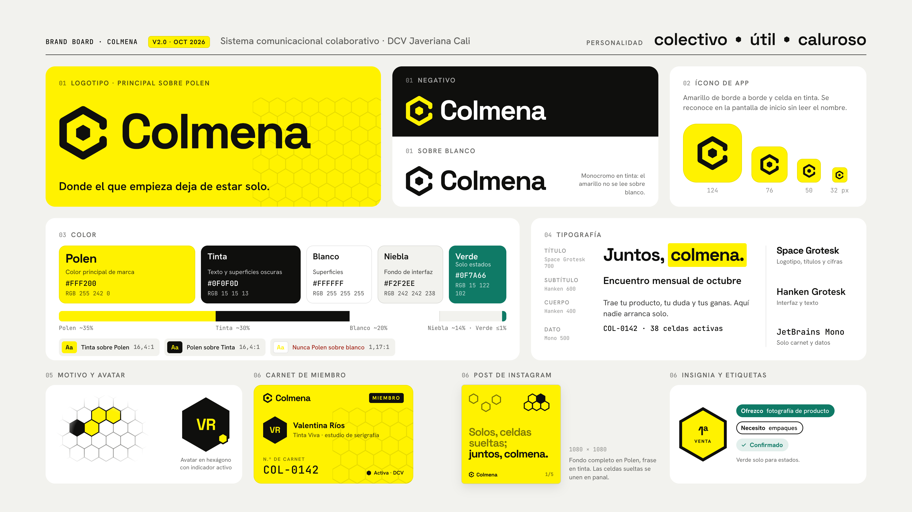

Desliza horizontalmente para comparar. Cada pantalla conserva sus 390 × 844 px.
Imagen de referencia de terceros retirada del repositorio público. Descripción: Referencia CRM con tarjetas, avatares y controles circulares.
01 · CRM Dashboard
Tomamos: agrupación en bloques, chips fáciles de recorrer, avatares apilados y flecha circular como acción de continuación.
Traducción: tarjetas Blanco/Niebla o Tinta; avatares hexagonales con iniciales reales. Apilarlos no comunica que están en línea ni que respondieron.
Se ve en: Entre pares y Bloques. Evitamos cifras de actividad y tarjetas multicolor.
Imagen de referencia de terceros retirada del repositorio público. Descripción: Referencia Recruitment con títulos grandes y tarjetas verticales.
02 · Recruitment
Tomamos: mensaje grande, tarjetas que ocupan el ancho y una acción al final de cada bloque. Navegación al alcance del pulgar.
Traducción: alternancia Niebla/Tinta y tipografía Space Grotesk; el tipo se lee con etiqueta, sin depender del color del bloque.
Se ve en: Bloques y la jerarquía de Pulso. No copiamos tarjetas amarillas ni el arcoíris.
Imagen de referencia de terceros retirada del repositorio público. Descripción: Referencia Brainly con saludo, módulos suaves y navegación flotante.
03 · Brainly
Tomamos: saludo humano, densidad amable, acciones familiares y barra inferior flotante con etiquetas.
Traducción: Niebla, Blanco y una sola acción principal en Polen. El saludo es genérico para visitantes; puede usar el nombre de la sesión existente al tener carnet.
Se ve en: Entre pares. Evitamos rachas, puntos, bot y métricas que no existen en Colmena.
Imagen de referencia de terceros retirada del repositorio público. Descripción: Referencia web con dos tarjetas y una acción principal por tarjeta.
04 · Tarjetas web
Tomamos: una idea por tarjeta, jerarquía entre mensaje y acción, márgenes amplios y botón fácil de encontrar.
Traducción: el texto auténtico de la publicación ocupa el lugar de la imagen protagonista; las superficies son planas y la acción se conserva explícita.
Se ve en: Bloques. Dejamos fuera paisaje de IA, serif, cristal, brillos y degradados.
Imagen de referencia de terceros retirada del repositorio público. Descripción: Referencia Today, Saved y Chats con contraste oscuro y claro.
05 · Today / Chats
Tomamos: apertura editorial en Tinta, tono de conversación y continuidad hacia una zona clara de lectura.
Traducción: cabecera oscura y feed Blanco; personas identificadas con avatares de marca y etiquetas Ejemplo.
Se ve en: Pulso. No simulamos chats, mensajes sin leer, stickers ni respuestas que no existen.

06 · Colmena v2.0
Conservamos: celda abierta oficial, Space Grotesk, Hanken Grotesk, avatares hexagonales, contraste Tinta/Polen y lenguaje de comunidad.
Traducción: cinco colores exactos. Verde solo en Ofrezco; Necesito en contorno. El spec escrito manda sobre cualquier diferencia de la imagen.
Se ve en: las tres propuestas. El Polen de fondo del carnet no se traslada a fondos de interfaz.
Contenido verificado. Snapshot del 30 de octubre de 2026 de los seis perfiles públicos de ejemplo y sus seis publicaciones en Supabase. Mismo orden y textos completos en los tres Muros. No se presentan como actividad real.
Vista de visitante. No se inventan nombre de sesión, miembros activos, reacciones ni encuentros. Las fechas son las de los registros, en hora de Colombia.
Ver snapshot de contenidoAlcance de esta entrega. Son mockups HTML independientes; los filtros funcionan solo sobre la copia local. Publicar, responder y navegar muestran un aviso de simulación. Ningún control escribe en Supabase.
Pantallas de 390 × 844 px, objetivos táctiles de al menos 44 px, fuentes locales y respeto por prefers-reduced-motion. Se revisó la app v2.0 antes de proponer. App, tokens, src/lib y supabase permanecen sin cambios.